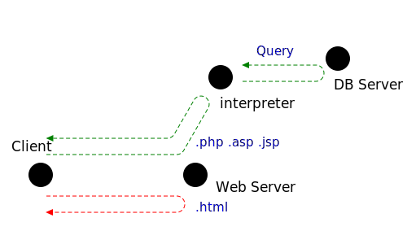

서문
학습을 실습하기 위한 환경을 세팅합니다.
왜 HTML인가?
HTMLHyperText Markup Language은 브라우저browser가 사이트에 저장된 문서를 보기좋게 해석해서 보여지도록 기술된 세계표준의 문서양식입니다.
이 때, 해석방식에 따라, 크게 2개의 방법으로 나뉘어집니다.[아래 그림]
최초의 웹서버Web Server는 고객Client의 요청이 있을 때, 단순하게 고객이 요청한 문서를 전달하면 됐습니다(빨간색 화살표). 하지만 이 방식에는 단점이 있습니다. 모든 고객이 언제 방문하더라도 똑같은 페이지를 받게 됩니다.
게시판이나 쇼핑몰과 같은 사이트는 언제, 누가 방문하는가에 따라서 보여지는 페이지가 다릅니다. 이는 데이터베이스Database, DB를 이용했기 때문입니다. 데이터베이스 서버는 물리적으로 다른 머신을 사용 할 수도 있고, 소프트웨어적으로만 분리가 될 수 있습니다.
녹색 화살표는 DB서버가 개입된 루트를 보여줍니다. ①고객의 요청이 들어오면, 웹 서버는 요청하는 문서의 확장자를 보고, 해석자interpreter에게 해석을 요구합니다. ②해석자는 문서 곳곳에 위치한 내용을 DB서버에게 질의(쿼리Query)해서 채우게 됩니다. 개념상, DB가 개입된 원래의 문서는 사용자가 볼 필요도 없고, 봐서는 안 될 문서가 될 수 있습니다.
Html은 위 두 상황 모두에서 문서의 뼈대를 만드는데 사용됩니다. 다만 확장자를 html로 지정하면 웹서버에게 추가적인 해석이 필요없는 문서임을 명시하게 됩니다.
뼈대란 무엇인가?
오른쪽 예시는 html으로만 작성되었습니다. 대표적인 기능은 아래와 같습니다.
- 글씨의 크기, 위치, 색을 표현
- 표 작성
- 리스트 작성
- 그림 불러오기
※ 내용(Contents)과 디자인(Design)의 분리: 업무 효율을 위해 html을 작성할 때에는 디자인 요소를 제외하는 것이 권장됩니다.
제목입니다.
안녕하세요.(이텔릭) 예제파일입니다.| 품목 | 수량 |
| 바나나 | 2 |

CSSCascading Style Sheets 추가
제목입니다.
안녕하세요.(이텔릭) 예제파일입니다.| 품목 | 수량 |
| 바나나 | 2 |
(마우스를 올려보세요)
CSS는 HTML과 마찬가지로 국제 표준 언어입니다. CSS는 디자인을 담당합니다. 대표적인 기능은 아래와 같습니다.
- 요소에 다양한 효과를 부여할 수 있습니다.(그림자, 흐릿하게..)
- 조건에 따라 간단한 동작을 부여할 수 있습니다.
예) 마우스가 머무른다, 스크롤을 내린다, 시간이 흐른다. - 적응형: 환경에 따라 배치를 달리 할 수 있습니다.
※ 적응형: 웹 페이지의 접근은 PC, 테블릿, 모바일 등의 다양한 환경에서 보여집니다. 따라서, 각 환경에 맞추어 콘텐츠를 배치하는 것을 적응형이라고 합니다.
JavaScript추가
오른쪽 예제는 사용자가 올바른 비밀번호를 입력했을 때, "정답입니다"를 출력합니다. (F12를 눌러서, 비밀번호가 무엇인지 알아봅시다)
Javascript는 Client의 브라우저에서 동작하기 때문에 DB와 소통할 수 없습니다. 하지만 CSS보다 더 구체적이고 복잡한 동작을 수행 할 수 있습니다.
그림(SVG, canvas)추가하기
이미 그려진 그림을 불러올 수도 있지만, 직접 말로(프로그램으로) 그림을 그릴 수도 있습니다. 다음과 같은 장점이 있습니다.
- 유지보수가 좋습니다. 수정이 쉽습니다.
- 움직일 수 있습니다.
- 자유도가 높습니다.
예) PPT는 둥근 연결 곡선을 지원하지 않습니다. - 용량이 매우 작습니다.
- 깨지지 않습니다. (아래 표 참조)
| png | svg |
| 684 kbyte(834배) | 820 byte |

|
|
작업환경 설정
작업환경이란 다음과 같은 준비과정을 의미합니다. 환경 설정이란 단순히 프로그램 설치 뿐 아니라, 각 프로그램에 대한 지식, 단축키 및 커스터마이징을 포함합니다.
- 코딩할 프로그램: 에디터
- 결과를 확인할 프로그램: 브라우저
- (프로젝트가 있다면) 프로젝트를 관리할 프로그램
- (서버가 있다면) 서버에 업로드 할 프로그램
브라우저
Chrome, Edge, Safari, Opera, Firefox 중 하나를 선택합니다. 단, Explorer는 표준 미준수. 지원 중단
| 브라우저명 | 특징 |
| 크롬 Chrome | 구글 지원, 높은 점유율[ PC | 모바일 ], 균형잡힌 성능(메모리, 속도) |
| 엣지 Edge | 마이크로 소프트(MS) 지원 |
| 사파리 Safari | 애플 지원(Mac에 최적화), 타플랫폼 지원이 미비 |
| 오페라 Opera | 오슬로(노르웨이)지원, 광고차단기능, 회원가입 요구, 메모리 최적화(저사양에서 가능) |
| 파이어폭스 Firefox | 모질라 재단(비영리) 지원, 빠른 속도 |
디버깅
대부분의 브라우저는 디버깅을 지원합니다(F12). 대표적인 기능은 다음과 같습니다.
- 각 객체의 속성 확인
- 속성 적용(주의: 반영X, 새로고침시 초기화)
- 로그 출력(콘솔은 F12가 활성화 상태에서 Esc로 열 수 있습니다.)
에디터
에디터는 기본적으로 문서를 저장 할 수 있으면 됩니다. vscode를 추천하는 이유는 다음과 같습니다.
- 가독성 높은 비주얼(알록달록)
- 쉬운 편집: 예약어 추천 기능, 각종 단축키
- 자동 완성 기능
- 자동 정렬 기능
다운로드 : https://code.visualstudio.com/
자세한 내용은 vscode 사용법문서를 참조 하십시오.
Git
Git은 코드관리 프로그램입니다. 코드관리란 수정 이력을 보관하고, 오류 발생시 정상버전으로 복구하는 작업을 의미합니다. 장점으로는
- 간단한 명령어로 이력관리 자동화
- 압축저장으로 공간 확보
- 서버와 동기화(Sync) 지원(사설 서버 운영 가능)
- 인증을 통한 보안기능 제공
- Github, MS에서 지원하는 무료서버(+웹 서버 제공)
다운로드
-
git-bash 다운로드 : https://git-scm.com/downloads
- git프로그램이 CLICommand Line Interface명령어를 입력하여 동작시키는 방법, 다른 방법 : GUI(Graphic User Interface), 마우스로 입력하는 방법다보니 명령어를 수행할 인터페이스와 모듈을을 다운로드 받아야 합니다. -
github가입 : https://github.com/
- 작업한 페이지를 업로드 하기 위해서 가입합니다.
자동인증 세팅
- 내 컴퓨터에서 ~/.ssh 폴더로 이동합니다.(예:c:\Users\iseoh\.ssh)
- ssh-keygen을 입력합니다.
아래는 예시를 보여줍니다. 빈 부분은 엔터를 입력합니다.
두개의 키가 생성될텐데, 비밀키-공개키 쌍으로, .pub이 공개키입니다.PS C:\Users\iseoh\.ssh> ssh-keygen Generating public/private rsa key pair. Enter file in which to save the key (C:\Users\iseoh/.ssh/id_rsa): iseohyun Enter passphrase (empty for no passphrase): Enter same passphrase again: Your identification has been saved in iseohyun Your public key has been saved in iseohyun.pub The key fingerprint is: SHA256:LhutlVawvKoWmw5sSIrqiEqgapLQK7+WWLjTucz6Mkg iseoh@SeohyunBook The key's randomart image is: +---[RSA 3072]----+ | | | | | . | | . o | |.+ S . | |OEo . o + | |OB++ +o B | |^=*.+ O | |%@B=o.+ | +----[SHA256]-----+ PS C:\Users\iseoh\.ssh>
- .ssh폴더 이하에 "config"파일과 "known_hosts"파일이 있습니다.
아래는 "config" 예시를 보여줍니다.Host github.com User iseohyun Hostname github.com PreferredAuthentications publickey IdentityFile ~/.ssh/iseoBook/iseohyun
- "known_hosts"는 최초접속시 기억할 내용을 기계가 작성합니다.
아래 예시는 "known_hosts" 접속정보를 강제로 지운 뒤, 접속을 진행했더니 발생한 로그입니다. yes를 입력하면 자동으로 생성됩니다.$ git push The authenticity of host 'github.com (20.200.245.247)' can't be established. ED25519 key fingerprint is SHA256:+DiY3wvvV6TuJJhbpZisF/zLDA0zPMSvHdkr4UvCOqU. This key is not known by any other names Are you sure you want to continue connecting (yes/no/[fingerprint])? yes Warning: Permanently added 'github.com' (ED25519) to the list of known hosts. Everything up-to-date
- github.com에서 psrsonal account >> Access >> SSH and GPG keys >> SSH keys에 방금만든 공개키(...._pub)의 내용을 메모장으로 열어서 복붙합니다.

github사이트 가입
생략저장공간 만들기(github사이트에서 수행)
 등록하면 아래와 같이 저장공간을 만들라고 나옵니다.
등록하면 아래와 같이 저장공간을 만들라고 나옵니다.아래 내용을 복사해서 git-bash에 넣으면 됩니다.

echo "# Test" >> README.md
git init
git add README.md
git commit -m "first commit"
git branch -M main
git remote add origin git@github.com:iseohyun/Test.git
git push -u origin main
IIS서버 설치
웹 서버 설치과정입니다. apaphe를 설치해도 됩니다. 다만, 윈도우 사용자라면 이미 설치된 서비스를 켜주기만 하면 되는 거라서 IIS를 사용합니다.설치
- 윈도우 11기준 : 설정판>>앱 >> 선택적 기능 >> 관련설정 >> 기타 Windows기능>> Windows 기능 켜기/끄기 창에서 >> 인터넷 정보 서비스 >> 확인(윈도우10:https://jsitclub.tistory.com/56)
환경설정
-
좌측 "연결"메뉴바에서, Default Web Site를 클릭하면 오른쪽에 작업탭이 열립니다. 작업탭에서 기본설정...을 엽니다

-
작업할 폴더를 "실제경로(P):"에 작성해 줍니다.

- 폴더의 권한을 변경해줍니다. 윈도우에서 권한 부여방법은 해당 폴더에서 우클릭>>속성>>보안>>편집>>추가로 진행 할 수 있습니다.
CREATOR OWNER(없음)
SYSTEM(모든권한)
나(모든권한)
Administrator(모든권한)
Users(읽기)
IIS_IUSERS(읽기) - 브라우저에서 127.0.0.1로 접속해봅니다.
도메인 구매(옵션)
모든 서버는 IPIPv4는 IP version 4, IPv6는 IP version 6를 의미합니다. v4는 255이하의 4개 정수로 이루어져 있습니다. 예를들어, 192.168.0.1를 반드시 가지고 있고, 도메인여기서 도메인이란, iseohyun.com과 같이 글자로 이루어진 주소를 이야기 합니다. 없이 IP만으로도 얼마든지 서버를 운영할 수 있습니다.
도메인 구매
후이즈, 예스닉, 가비아, wix, GoDaddy 등등 검색창에 "도메인 구매"라고 검색하면 나오는 어지간한 사이트에서 구매하면 됩니다. 보통 도메인 회사들이 사업다각화를 위해서 홈페이지를 끼워서 파는데, 우리는 그럴 것이 아니기 때문에, 그냥 싼데서 구매하면 됩니다.
- 싼데서 구입합니다. 보통 1년에 15,000원 선입니다. 키워드가 좋을수록 비쌉니다.
- 하나만 구입합니다. 몇 회사에서 .com, .co.kr, .net등을 묶어서 파는데 낭비 또는 손해입니다. 결국 검색에 노출되는 주소는 대표 주소 하나입니다. 게다가 홍보할 때 오히려 좋지 않습니다.
도메인 연결
도메인을 내가 만든 문서가 저장된 서버로 연결을 해주어야 합니다.
내 컴퓨터에 저장해 두고, 하루종일 컴퓨터를 켜놔도 됩니다. 다소 무식한 방법 같지만 옛날엔 이렇게 많이 했습니다. 우리는 github(Microsoft)에다가
서버를 만들(무료)예정입니다. tistory에 만들어도 됩니다. Tistory(Kakao) 역시(무료+) 엄청난 자유도를 자랑하기 때문에 매우 좋은 선택입니다. 강력한 편집 및
관리툴을 제공하기 때문에 고려해 볼 만 합니다.
도메인을 구매한 사이트에서 내 계정에 찾아가면 어느 주소로 연결할 것인지 물어봅니다.
포워딩에는 2가지 방법이 있습니다. 구매한 사이트에 서버의 도메인을 등록하는 방법, 서버의 네임서버를 등록하는 방법. 내가 구매한 주소는 iseohyun.com인데, 연결은 둘 다 됩니다만,
내 사이트의 민낯이 그대로 보이는 것이 어째 마음에 들지 않습니다. 따라서, 반드시 네임서버 등록을 통해서 포워딩을 하시기 바랍니다.
| 방법 | 연결 | 접속자에게 보여짐(예시) |
| 도메인 등록 | ○ | iseohyun.github.io/html/ |
| 네임서버 등록 | ○ | iseohyun.com |
네임서버
도메인으로 서버에 접근하기 위해서는 NSName Server;네임서버를 거쳐야 합니다. cmd를 열고, ipconfig/all 명령어를 통해 본인이 현재 사용중인 DNS(Domain Name Server)를 알 수 있습니다.
| 담당 | 주소 |
| SK | 219.250.36.130 210.220.163.82 |
| KT | 168.126.63.1 168.126.63.2 |
| LG | 164.124.101.2 203.248.252.2 |
| 8.8.8.8 8.8.4.4 |
|
| Cloudflare | 1.1.1.1 |
위의 서버는 도메인 시스템의 가장 시작점이고, 우리가 등록할 도메인 서버는 가장 마지막에 위치할 서버입니다. 그 서버는 각 서비스 업자가 공개하고 있습니다.공개된 IP주소를 구매한 사이트 계정에서 A레코드 관리(네임서버 호스팅)으로 등록하거나, 타입을 A로 하여 등록하면 됩니다.
| 서버명 | 주소 |
| Github | 185.199.108.153 185.199.109.153 185.199.110.153 185.199.111.153 [ 상세 정보 ] |
| 티스토리 | 27.0.236.139 |
마지막으로 문서가 저장된 서버에 구매한 도메인 이름을 알려주어야 합니다. 이를 그림으로 나타내면 다음과 같습니다.